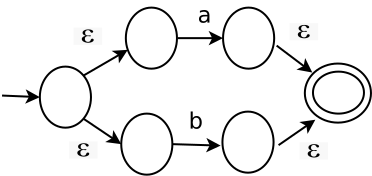
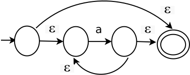
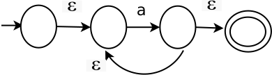

Objetivo
Se utilizarán los modelos de construcción de Thompson de la concatenación, la alternativa y la cerradura, para construir el AFN.
Actividades
Considerar los tres modelos de las expresiones regulares para transformar una ER a un AFN:
Modelo de la construcción de Thompson de la concatenación.ab

Modelo de la construcción de Thompson de la alternativa.a|b

Modelo de la construcción de Thompson de la cerradura de Kleene.a*

Modelo de la construcción de Thompson de la cerradura positiva.a+

Convertir la siguiente ER a un AFN: a*baab
Cuestionario
Pregunta 1. Describir el proceso para la transformación de una ER a un AFN con el uso de la construcción de Thompson.
Pregunta 2. Desarrollar el ejercicio usando la expresión regular a*baab. Subirlo al repositorio correspondiente que esta en el driver. Lo puedes hacer a mano y lo escanean.
Pregunta 3. Desarrollar el ejercicio usando la expresión regular obtenida del siguiente código: if(a != b){a + b;}. Subirlo al repositorio correspondiente que esta en el driver. Lo puedes hacer a mano y lo escanean.